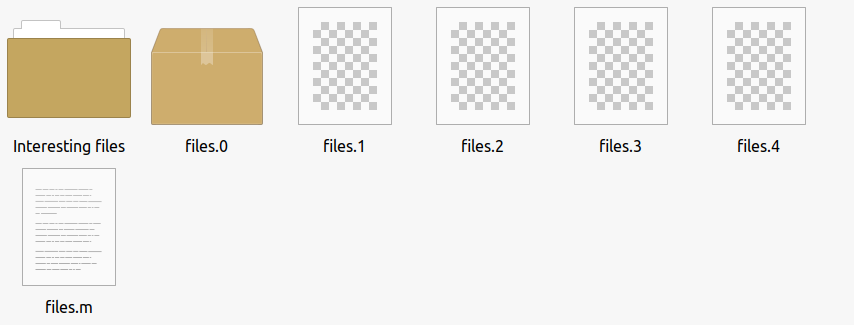

Tuesday 15 Oct 2024
Introducing arcK – a command line archival tool for directories or files
Visit official pages.
The Problem
I have been testing my backups and thought that I am putting a lot of trust in cloud storage providers to return data exactly as I have sent it. As my pictures directory increase in size every year, I need a better solution than to rely on 7z split archives. Should one part be damaged, the entire 7z splits cannot be recombined; this is a major risk.
To reduce costs and e-waste, I am not buying additional external hard drives to backup to. Not only are these devices lower quality, they also only have a 2-year warranty and it’s likely their USB to SATA board will die first. I have one hard drive, which is stored off-site. This is designed to reduce time restoring should main data be lost. But I do not like idea of having external hard drives all over the place. As my data has grown, the strategy of buying a 2TB external hard drive with space to spare is no longer an option. One good thing about the hard drive is that I can run my DFG tool to check integrity of the files from time-to-time.
To solve problem of large directories and possibility of a restore failure, I wanted to break a directory into parts, with parity, to restore the directory should 2 parts be damaged. It is beneficial to store fewer archival packages than thousands of individual files on AWS S3 Glacier. I like S3 storage because it grows with me, and it a pay-as-you-go model – I do not have to upfront pay for X TB. I am also using IDrive (I bought a year of storage to play with on the cheap) but likely to cancel this at renewal time; the renewal price makes it more expensive to use AWS. I have a secondary AWS account, which I may use store a duplicate copy, or look into another S3-compatible storage provider.
The Solution
I created arcK to solve this. A directory is split into 5 parts, with 2 being for parity. It is like RAID6, but not across hard drives, across files instead. Parity is a calculation to restore missing parts. Also, the tool identifies damaged parts, which are removed prior to restoration. That means I can lose 2 parts without data loss. This is especially useful when storing long term in the cloud or on external media.
Usage
There are two ways to run the application. Either by the wizard, which gives user-friendly prompts, or from a command line with arguments. I prefer command line, but understand some users may wish to use a wizard.
For the wizard:
arck
Command-line usage:
arck -s /source -d /destination -n give_archive_a_name
It is important to specify a name of the archive to something sort and friendly. This will be the name given to each part. For example, if you specify 2023, the parts will be: 2023.0, 2023.1, 2023.2, 2023.3, and 2023.4.
For example, to pack a folder named 2023 and store on USB drive.
arck -s /home/karl/pictures/2023 -d /mnt/usb -n 2023
That’s it. arcK will do the rest from there. Depending on the size of the directory or file, this may take a long while – please be patient; you’re data is being protected for long-term archival storage.
My Example
I have enjoyed using this tool to archive my pictures. It has been easy to do, and I feel much more secure in a future restore. I have stored half of the parts in one S3 bucket, and the other in another bucket; both buckets are stored in different regions. I will introduce another cloud provider at some point for extra resilience.
On my ZFS pool, I have a picture dataset organised by year.
For example:
Pictures
2021
2022
2023
2024
It’s organised like this because after the year ends, no more pictures can be added. Therefore, I know that once archived and backed up, I do not need to worry about missing files.
Prior to making this tool, I used to tar the year and store in AWS Glacier. Then, as the years get larger, I split them into parts using 7z by 5GB, which can result in 11 parts. Should a single bit be damaged, the entire archive cannot be restored. I need a better solution.
Here’s what the output looks like:
Before processing:
After processing:

Here’s the interesting part. I decided to backup half the parts in one region and the other in another region. For example, half are in the US and the other in the EU. I overlapped part 2 to ensure safe recovery.
Bucket names:
- karlpictures-us-bucket-parts012
- karlpictures-eu-bucket-parts234
(not actual bucket names)
I ensured that the metadata file, with the .m extension, is stored in both regions; this file contains the metadata of each part, which is checked during restore because if you introduce a damaged part into the erasure code module, restore will fail. It can manage missing parts but not existing parts with a bitflip, for example. Therefore, keep this metadata file backed up. I also keep this file locally and offsite elsewhere. It’s a tiny file, so easy to backup.
- karlpictures-us-bucket-parts012
◦ 2023.1
◦ 2023.2
◦ 2023.m
- karlpictures-eu-bucket-parts234
◦ 2023.3
◦ 2023.4
◦ 2023.m
If you want to reduce the size of the file or directory given to arcK, you could split the directory using 7z or the split command, and then run arcK on each split – but this would be a long process and complex to manage manually.
No compression is done during packing. There is not option for encryption yet, so you will need to encrypt yourself. Most S3 upload tools, such as rclone, offer ability to encrypt data at rest.
This is not a backup tool, therefore no method to monitor and save incremental changes. Please consider this an archive tool to store cold data for long periods of time. You should also maintain a backup of archival data to ensure you can restore. The ultra paranoid could store parts across many providers; this is possible with arcK.
I am not sure if this is feasible but would be useful to create a recovery mode should the metadata file be lost and would be useful to rebuild damaged or missing parts so save recreating the archive from source. I will investigate this further.
Version 1.2 will have a list function. A list will be generated of all the files with their hash so that you can easily see what is inside the archive. Perhaps it could be called 2023.f; if this file is present during restore, arcK will automatically checksum files and report failed hashes. There will be an option to generate this file on source files to save you packing again.
Thank you for taking the time to read this post. I hope you find arcK useful and have fun testing. I am still developing arcK and have some further ideas for features. Click here to download and get started today.
Backlinks:
index
Journal:Index
Journal:2024:10